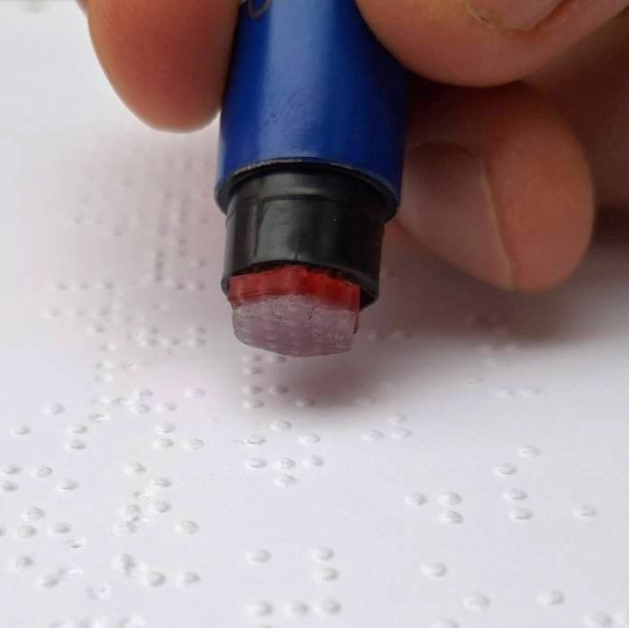
Pick one option at each step. The five choices are largely independent — any combination is buildable.
Braille-tip is a compact (11 mm Ø hex) soft tactile sensor that mounts on a pen and reads Braille as you sweep it left-to-right. A soft silicone membrane carries 19 taxels (1 mm Ø, on a 2.5 mm grid matching Braille dot spacing). Each taxel is hydraulically coupled down a fluid channel; pressing a taxel displaces fluid, read out either optically (dyed water + camera) or capacitively (liquid metal + an outer conductive plate — the Coil-Tac mechanism).
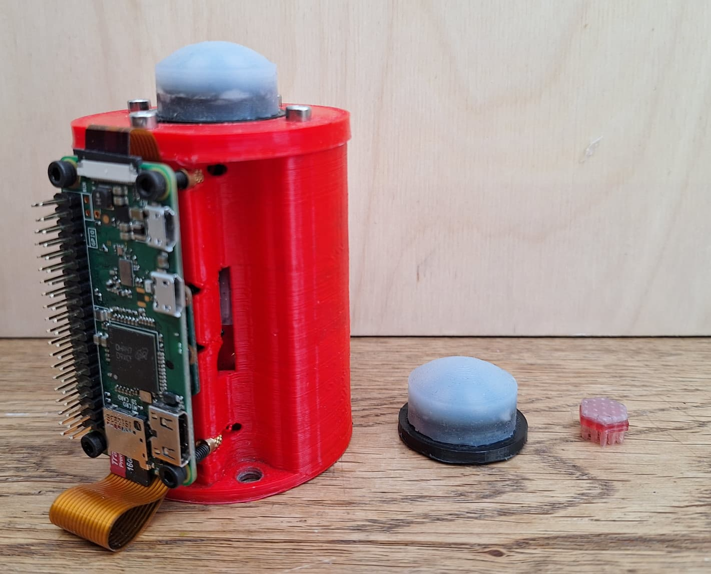
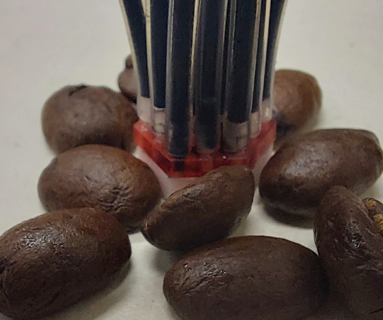
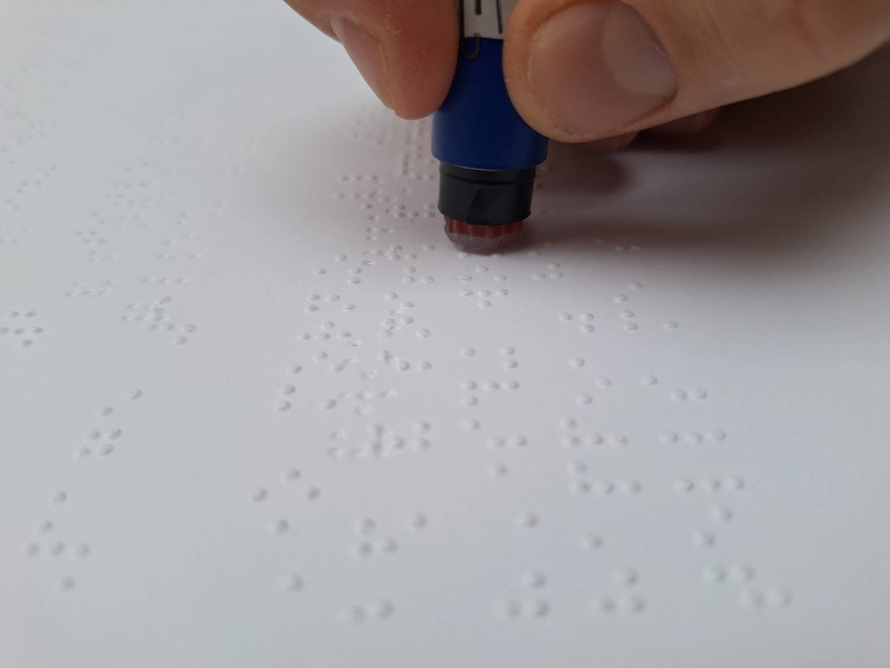
The columns are just two sensible recipes — not a fixed pairing. Any combination works; only Fork 1 (transduction) cascades, setting the liquid, readout and maintenance.
| # | Decision | Optical example | Capacitive example |
|---|---|---|---|
| 1 | Transduction | Optical: dyed water + camera + CV | Capacitive: liquid metal + outer plate + voltage reader |
| 2 | Tip fabrication | Cast Ecoflex in a mould | Direct-print silicone (Form 3, opaque black) |
| 3 | Solid parts | FDM — easier casting, larger builds | Resin/SLA — precise, small builds |
| 4 | Channels | Coupled tubing (barbs / coupler) | Printed channel matrix (CAD'd channels) |
| 5 | Filling | Back-fill interface, then top up tubes | Direct small-syringe (if small enough) |
On channels (Fork 4): the "printed channel matrix" trades high design effort for low fabrication effort (no coupling), and is independent of how you make the tip. Printed channels + capacitance is proven (the merged device); printed channels + optical ("printed tubing") is unexplored.
Fabrication/).Either printer works for either build:
Every resin print gets a UV cure + IPA wash. If silicone will later cure against the part, this must be VERY thorough — uncured resin inhibits platinum-cure silicone. Repeat cure/wash cycles (~5× in the paper) until silicone reliably sets against it.
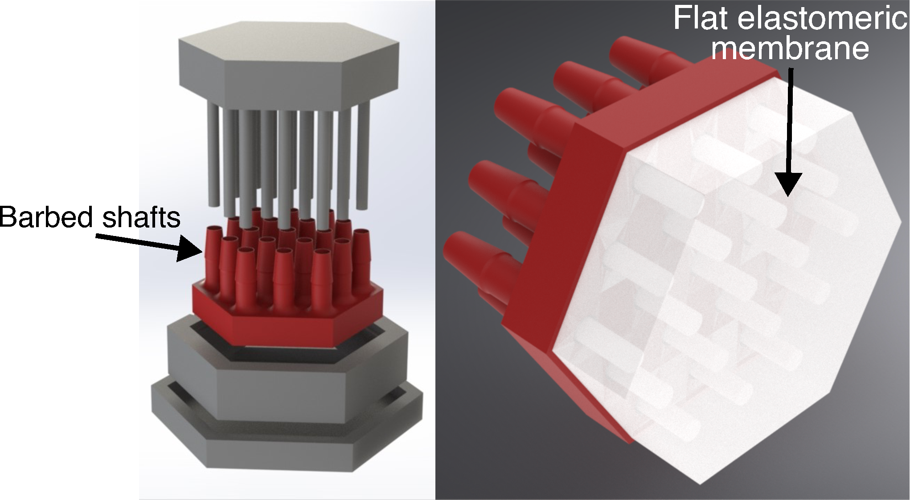
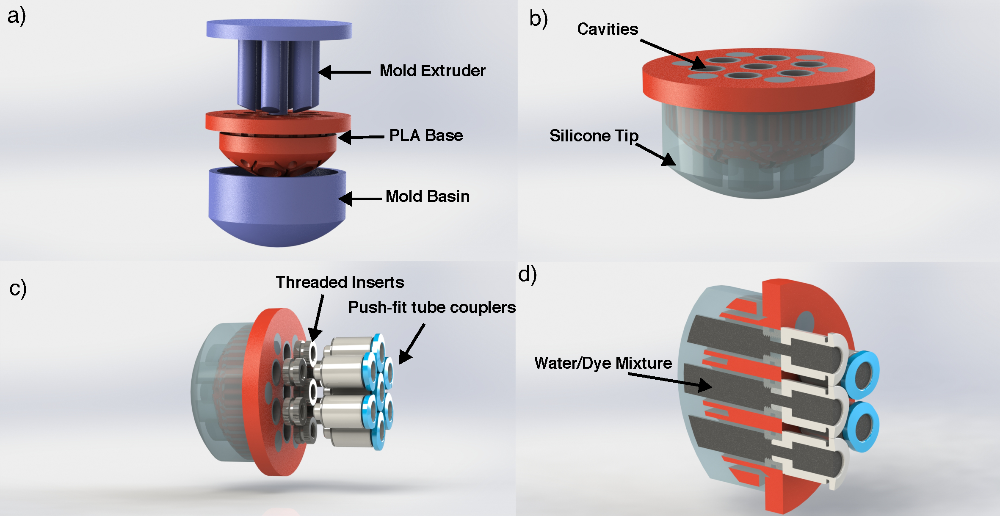
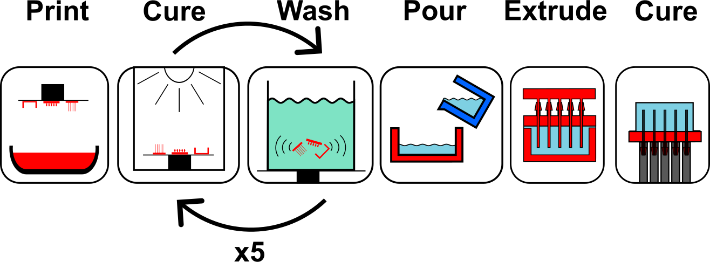
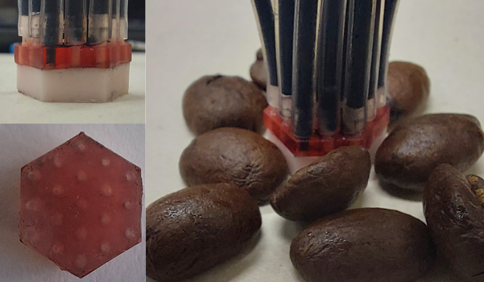
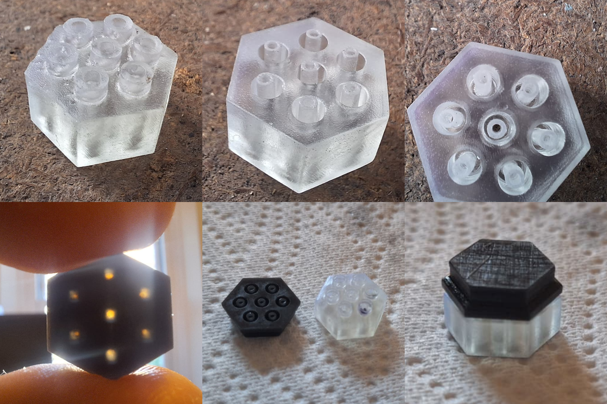
How the taxels connect to their fluid channels is a trade between design effort and fabrication effort — and it's independent of how you made the tip (print the tip and use normal tubing, or cast the tip and print a channel matrix — any combination works).
Fit existing tubing to the sensor. Two methods:
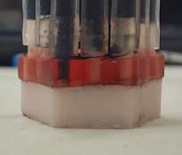
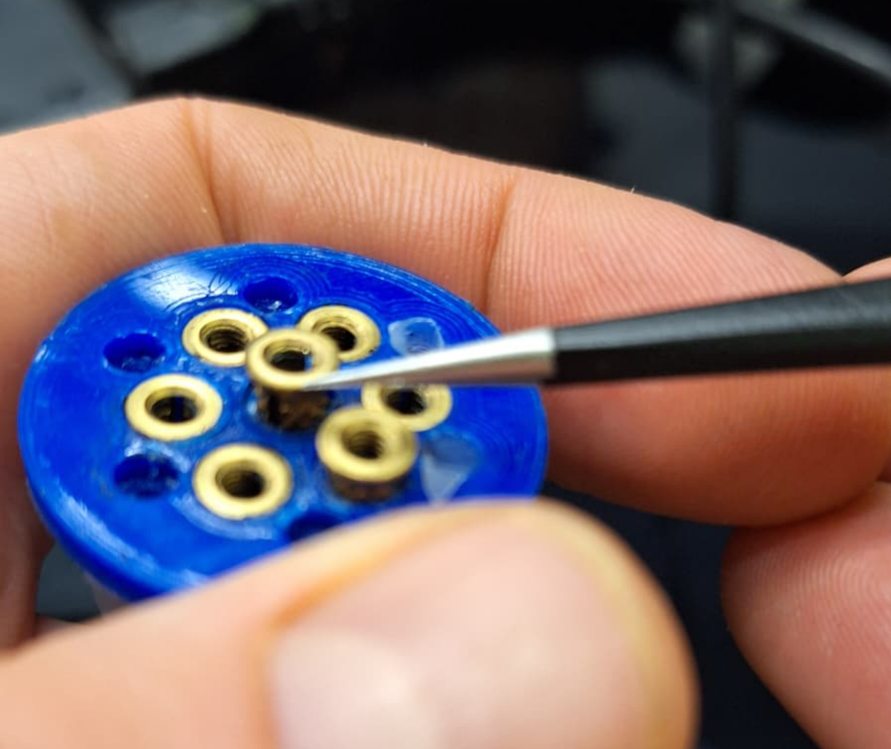
CAD all the channels into a (clear) resin part so they're integral to the sensor — there's nothing to couple; you fill the channels directly (Step 5). This is exactly the clear resin backing used in the merged device (Step 6). For capacitance it's proven; for the optical readout this "printed tubing" route is unexplored but promising.
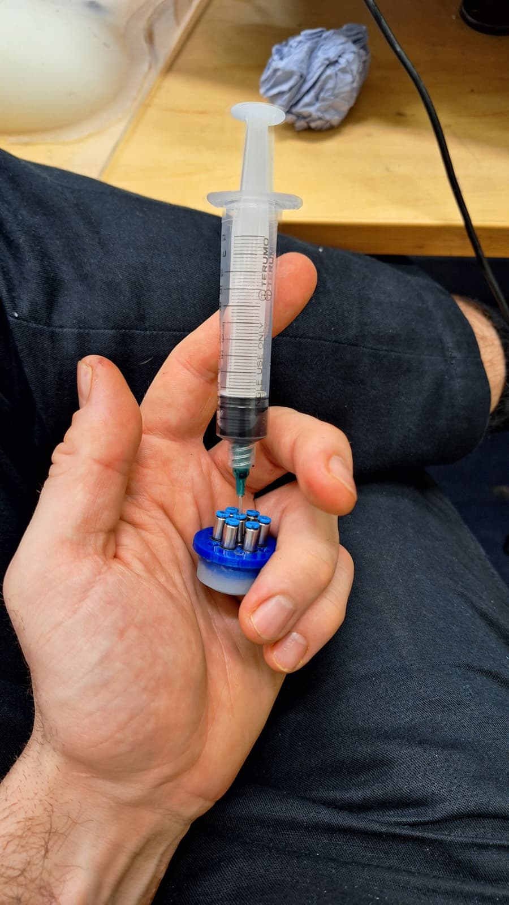
The proven merge: it looks like the original Braille-tip but uses liquid metal.
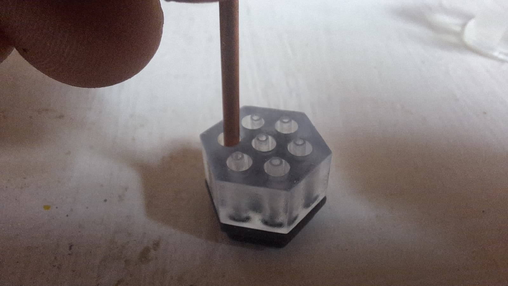
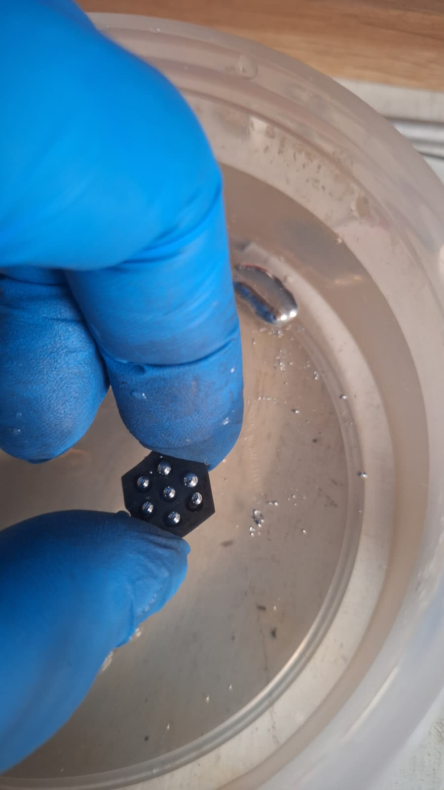
Hardware. A camera images a downstream length of transparent tubing (not the tip). I used glass capillaries to keep it thin and inflexible; transparent tubing will still work.
Software (separate, and ripe for improvement). The current pipeline normalises each channel 0→1, thresholds to binarise dot/no-dot (I used 0.4 with smoothing decay 4 — my specific settings), then segments letters + dictionary-looks-up → text/audio. This software is very inefficient and should be changed / improved upon.
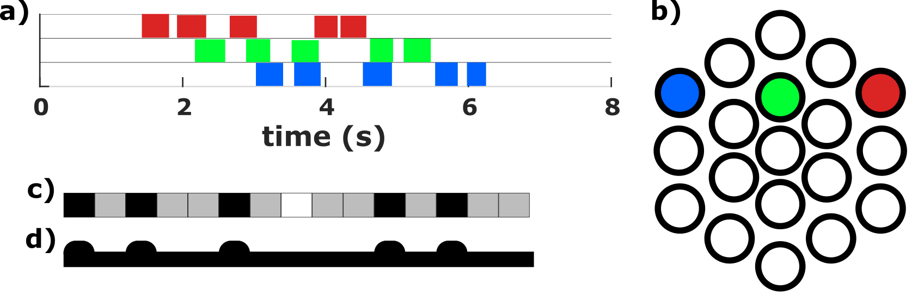
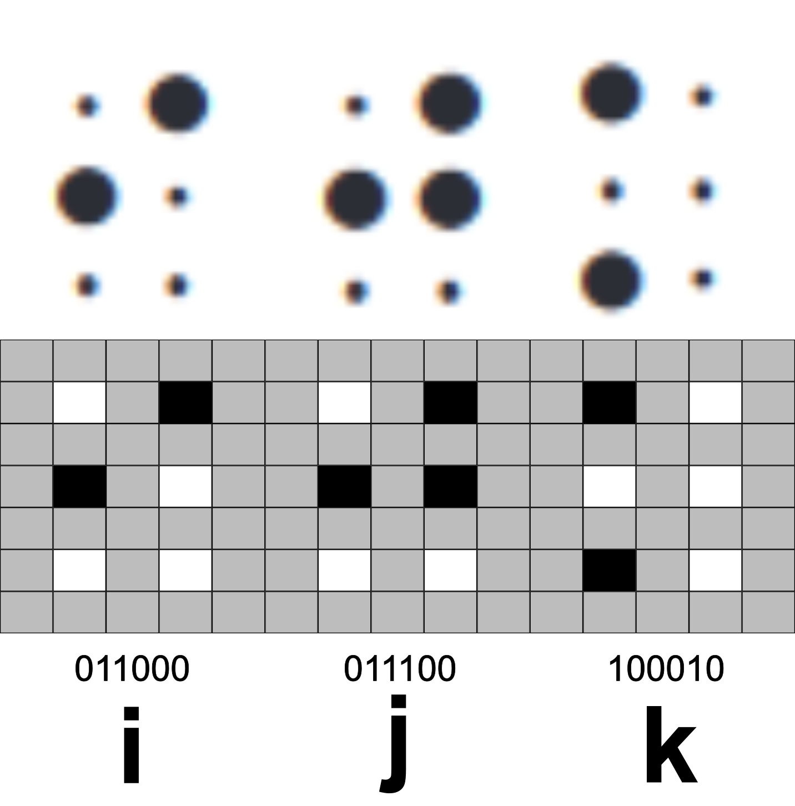
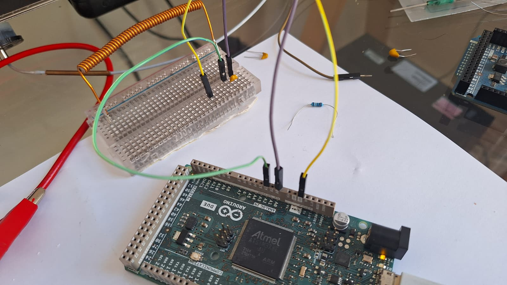
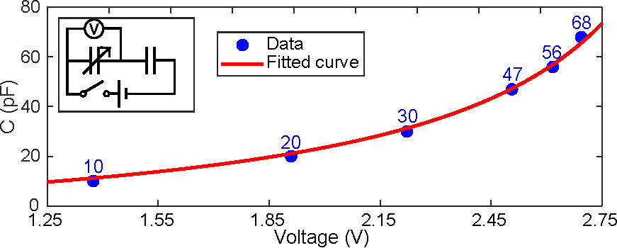
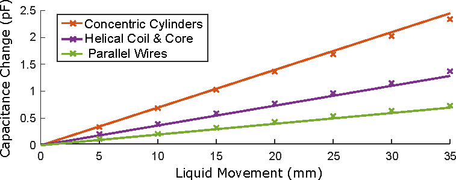
Full data & code: github.com/geojenks/braille-tip · github.com/geojenks/coiltac